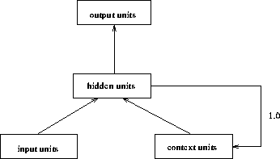
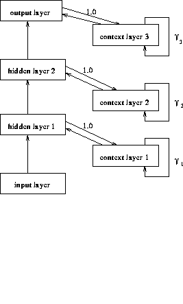
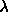

The initialization function JE_Weights requires the specification of five parameters:

,
: The weights of the forward connections are randomly chosen from the interval .
: Weights of other recurrent links to context units. This value is often set to .
.
These values are to be set in the INIT line of the control panel in the order given above.